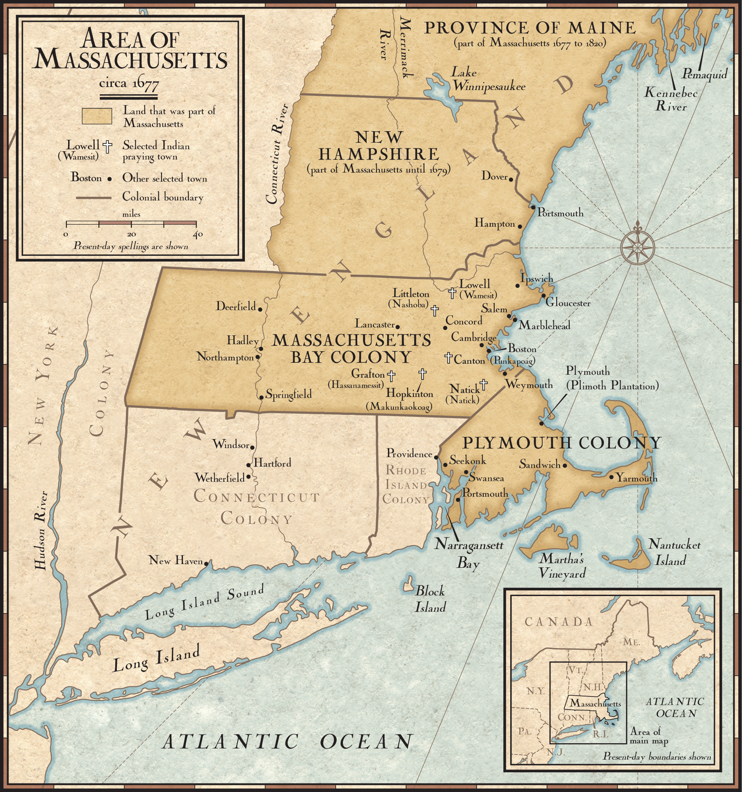

The Puritan Lifestyle
In September of 1628, the first group of Puritan settlers came to Salem, Mass. The Puritan left England so they wouldn’t face religious persecution. However, they established a settlement that was heavily religious with no separation between church and state. Because when anyone stood up against the members of authority they were going against their religious leaders.
